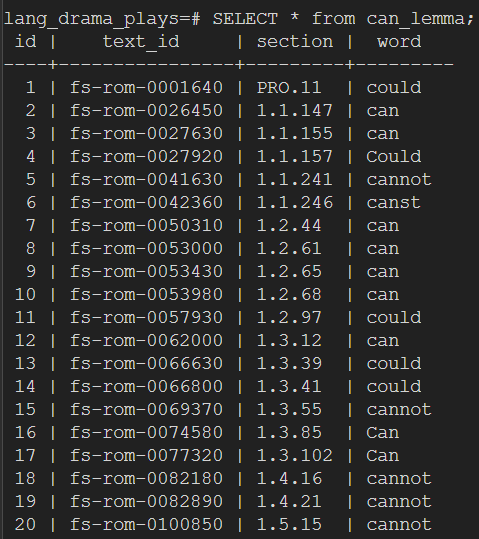

import os
def replace_first_line(file_path):
with open(file_path, 'r', encoding='utf-8-sig') as file:
lines = file.readlines()
# Check if the first line starts with the specified string
if lines and lines[0].startswith('<TEI xmlns='):
lines[0] = '<TEI>\n'
# Write the modified content back to the file
with open(file_path, 'w', encoding='utf-8') as file:
file.writelines(lines)
print(f"Successfully processed: {file_path}")
def process_xml_files(directory):
for root, dirs, files in os.walk(directory):
for file in files:
if file.endswith('.xml'):
file_path = os.path.join(root, file)
replace_first_line(file_path)
# Specify the directory containing your XML files
directory = r'D:\lang_drama_plays\plays'
process_xml_files(directory)Language Teaching with Drama Plays
Language Teaching with Drama Plays - Report
Felipe Nobrega - Text Technology Project Description
Goal
Provide easy access to grammar topics that are present on William Shakespeare drama plays and may be useful for language teachers. Therefore, the project can be used to facilitate the usage of literature in the classroom and shorten class preparation time.
How?
Website that allows queries for specific grammar topics within the corpus of drama plays.
Provide a list with results of the query and the context of the drama play where it is found.
This project is based in three steps according to the project requirements of the course. Below we can find an overview of the project along with the required steps.
| Step | Description |
|---|---|
| Collect |
|
| Prepare |
|
| Access |
|
Collect
DraCor Drama Corpora
Access https://dracor.org/shake and download the .xml files corresponding to the following plays:
| Play | Processed | Database | Webpage |
|---|---|---|---|
| Romeo and Juliet | OK | OK | OK |
| Hamlet | No | No | No |
| Macbeth | No | No | No |
| King Lear | No | No | No |
| Othello | No | No | No |
Prepare
XPath commands
- Extraction of lemma can from the play:
//w[@lemma='can']Python commands
- Solve the problem of special character at the beginning of the plays. In order to remove the special character that prevented the XMLCopy Editor from doing XPath, I have created the following script to automatically replace the first line of every XML file.
- Parse XML in order to extract information in formatted text in order to feed Postgres tables.
import xml.etree.ElementTree as ET
# Parse XML file
tree = ET.parse('modal_verbs_romeo_juliet.xml')
root = tree.getroot()
# Iterate through each 'w' element in the XML
for w in root.findall('w'):
id = w.get('id')
section = w.get('n')
# Extract element value
element_value = w.text.strip() if w.text else ''
# Format the output
formatted_output = f"('{id}', '{section}', '{element_value}'),"
# Print the results
print(formatted_output)- XML to HTML converter. Convert extracted original text from XML to later link text_id element to span class in HTML format.
from lxml import etree
def convert_xml_to_simple_html(xml_file, html_file):
tree = etree.parse(xml_file)
root = tree.getroot()
html = etree.Element("html")
head = etree.SubElement(html, "head")
etree.SubElement(head, "meta", charset="utf-8")
etree.SubElement(head, "title").text = "Romeo and Juliet"
style = etree.SubElement(head, "style")
style.text = "body { line-height: 1.5; } .highlight { background-color: yellow; }"
body = etree.SubElement(html, "body")
text_div = etree.SubElement(body, "div", id="text")
current_section = None
for w in root.findall('.//w'):
if w.get('n') and w.get('n') != current_section:
current_section = w.get('n')
section_span = etree.SubElement(text_div, "span", id=w.get('id'), class_=current_section)
section_span.text = f"\n\n[{current_section}]\n"
word_span = etree.SubElement(text_div, "span", id=w.get('id'))
word_span.text = w.text
word_span.tail = " "
script = etree.SubElement(body, "script")
script.text = """
const wordId = window.location.hash.slice(1);
if (wordId) {
const word = document.getElementById(wordId);
if (word) {
word.classList.add('highlight');
word.scrollIntoView({ behavior: 'smooth', block: 'center' });
}
}
"""
with open(html_file, 'wb') as f:
f.write(etree.tostring(html, pretty_print=True, method="html", encoding="utf-8"))
# Usage
convert_xml_to_simple_html('romeo_juliet_text.xml', 'romeo_and_juliet.html')Database Commands
sql commands
- Create Tables Command to create tables for Modal Verbs
CREATE TABLE can_lemma (
id SERIAL PRIMARY KEY,
text_id TEXT NOT NULL,
section TEXT NOT NULL,
word TEXT NOT NULL
);- Insert extracted data from XML files
INSERT INTO can_lemma (text_id, section, word) VALUES
('fs-rom-0001640', 'PRO.11', 'could'),
('fs-rom-0026450', '1.1.147', 'can'),
(...)Table example

Access
Python commands
- Webapp created using Flask library to connect to PostgreSQL database and perform queries that will be displayed in .html webpages.
from flask import Flask, render_template, request, send_from_directory
import psycopg2
import os
app = Flask(__name__)
# Connect to PostgreSQL database
def get_db_connection():
conn = psycopg2.connect(
dbname='lang_drama_plays',
user='postgres',
password='',
host='localhost',
port='5432'
)
return conn
# Define root and main page template to be displayed
@app.route('/')
def index():
return render_template('index.html')
# Query in database
@app.route('/search', methods=['POST'])
def search():
modal_verb = request.form['modal_verb'].lower()
table_name = f"{modal_verb}_lemma"
conn = get_db_connection()
cur = conn.cursor()
query = f"SELECT text_id, section, word FROM {table_name}"
cur.execute(query)
results = cur.fetchall()
cur.close()
conn.close()
return render_template('results.html', results=results, modal_verb=modal_verb) #results page
@app.route('/text/<filename>')
def serve_text(filename):
return send_from_directory('text', filename)
if __name__ == '__main__':
app.run(debug=True)knitr::knit_exit()